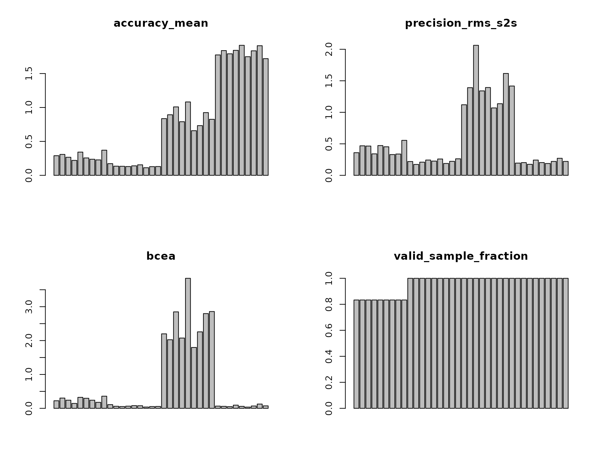
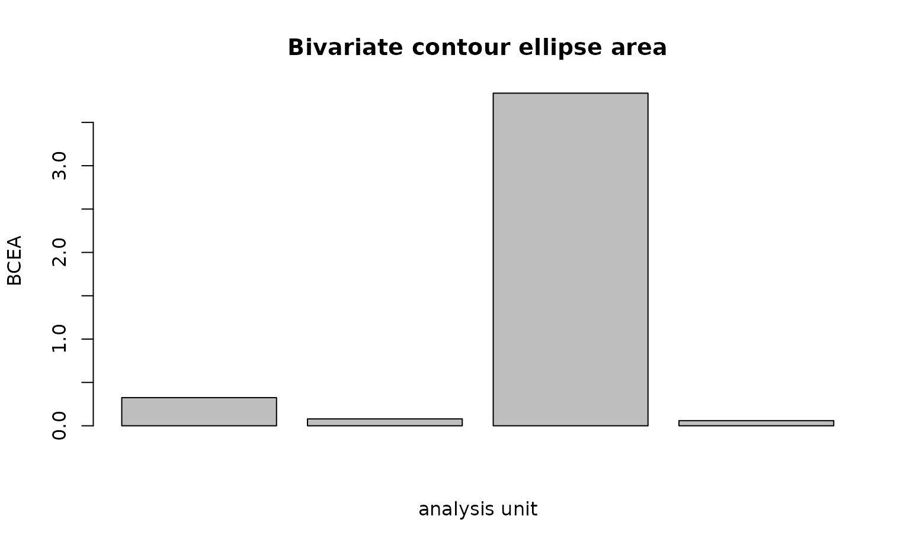

Gazepoint data quality: accuracy, precision, sampling, and loss
Source:vignettes/articles/gazepoint-data-quality-workflow.Rmd
gazepoint-data-quality-workflow.RmdWhy this workflow exists
Gazepoint exports contain useful native validity and coordinate fields, but a vendor summary is not a substitute for a reproducible study-level quality analysis. The gp3tools wrappers in this article resolve Gazepoint columns and metadata and then delegate every scientific formula to the vendor-neutral eyeprocess core.
The workflow keeps four questions separate:
- Accuracy: how far was gaze from a known target?
- Precision: how stable was gaze while the intended target was stable?
- Sampling: what timing stream was actually recorded?
- Availability: how much usable gaze was available and how was it lost?
No wrapper automatically excludes a trial or participant.
Native GP3 coordinates and units
Gazepoint BPOG/FPOG/LPOG/RPOG screen coordinates are treated as normalized coordinates. TIME is interpreted as seconds and MSTIMER as milliseconds. For a generic column such as gaze_x, the wrapper does not inspect the numeric range and guess a unit: set coordinate_unit explicitly.
If you want angular results from normalized or pixel coordinates, provide physical display geometry and viewing distance and request output_unit = “degrees”. Merely supplying geometry does not change units.
Reproducible 9-point example
The following synthetic data mimic a validation/check-target stream with native BPOG coordinates. The four profiles deliberately separate calibration offset, spatial noise, irregular timing, and missingness.
set.seed(20260918)
targets <- expand.grid(
target_x = c(0.20, 0.50, 0.80),
target_y = c(0.20, 0.50, 0.80)
)
profiles <- data.frame(
profile = c(
"good",
"offset",
"noisy",
"irregular_missing"
),
bias_x = c(0, 0.035, 0, 0),
bias_y = c(0, -0.025, 0, 0),
noise = c(0.003, 0.003, 0.018, 0.006)
)
rows <- list()
k <- 0L
for (p in seq_len(nrow(profiles))) {
for (target_id in seq_len(nrow(targets))) {
ms <- 0
for (sample_id in seq_len(12)) {
interval <- 1000 / 60
if (profiles$profile[p] == "irregular_missing" &&
sample_id %in% c(5, 10)) {
interval <- interval * 2.5
}
ms <- ms + interval
x <- targets$target_x[target_id] +
profiles$bias_x[p] +
rnorm(1, 0, profiles$noise[p])
y <- targets$target_y[target_id] +
profiles$bias_y[p] +
rnorm(1, 0, profiles$noise[p])
valid <- 1
reason <- NA_character_
if (profiles$profile[p] == "irregular_missing" &&
sample_id %in% c(6, 7)) {
x <- NA_real_
y <- NA_real_
valid <- 0
reason <- if (sample_id == 6) "blink" else "tracker_invalidity"
}
k <- k + 1L
rows[[k]] <- data.frame(
USER = "P001",
SESSION_ID = "S001",
MEDIA_ID = paste0(profiles$profile[p], "_", target_id),
profile = profiles$profile[p],
target_id = target_id,
MSTIMER = ms,
BPOGX = x,
BPOGY = y,
BPOGV = valid,
target_x = targets$target_x[target_id],
target_y = targets$target_y[target_id],
missing_reason = reason
)
}
}
}
gp_validation <- do.call(rbind, rows)Build the quality report
For normalized coordinates, the report can stay normalized or be converted to degrees when geometry is available. This example uses a 24-inch-class 1920-by-1080 display and an explicitly declared viewing distance.
geometry <- list(
screen_width_px = 1920,
screen_height_px = 1080,
screen_width_cm = 53.0,
screen_height_cm = 29.8,
viewing_distance_cm = 60
)
quality <- create_gazepoint_quality_report(
gp_validation,
missing_reason_col = "missing_reason",
level = "trial",
output_unit = "degrees",
geometry = geometry,
nominal_sampling_hz = 60,
bcea_probability = 0.68,
preprocessing_spec = "synthetic raw validation samples; no interpolation",
quality_rules = "descriptive QC with study-defined review flags"
)
quality[c(
".gp3_quality_participant",
".gp3_quality_trial",
"accuracy_mean",
"precision_rms_s2s",
"precision_sd",
"bcea",
"effective_sampling_hz",
"valid_sample_fraction",
"data_loss_fraction"
)]
#> .gp3_quality_participant .gp3_quality_trial accuracy_mean precision_rms_s2s
#> 1 P001 irregular_missing_1 0.2893474 0.3595844
#> 2 P001 irregular_missing_2 0.3083500 0.4686716
#> 3 P001 irregular_missing_3 0.2663192 0.4647304
#> 4 P001 irregular_missing_4 0.2203675 0.3411695
#> 5 P001 irregular_missing_5 0.3425022 0.4728144
#> 6 P001 irregular_missing_6 0.2566055 0.4531879
#> 7 P001 irregular_missing_7 0.2371947 0.3298432
#> 8 P001 irregular_missing_8 0.2275658 0.3380531
#> 9 P001 irregular_missing_9 0.3707519 0.5552385
#> 10 P001 good_1 0.1721052 0.2193582
#> 11 P001 good_2 0.1350754 0.1730684
#> 12 P001 good_3 0.1334056 0.2092279
#> 13 P001 good_4 0.1298730 0.2428993
#> 14 P001 good_5 0.1401107 0.2261049
#> 15 P001 good_6 0.1550887 0.2593953
#> 16 P001 good_7 0.1123879 0.1883011
#> 17 P001 good_8 0.1284616 0.2222722
#> 18 P001 good_9 0.1299141 0.2622649
#> 19 P001 noisy_1 0.8357059 1.1197978
#> 20 P001 noisy_2 0.8925719 1.3909588
#> 21 P001 noisy_3 1.0085314 2.0631175
#> 22 P001 noisy_4 0.7899847 1.3399057
#> 23 P001 noisy_5 1.0815652 1.3935175
#> 24 P001 noisy_6 0.6575972 1.0696131
#> 25 P001 noisy_7 0.7328801 1.1364286
#> 26 P001 noisy_8 0.9246466 1.6165669
#> 27 P001 noisy_9 0.8258472 1.4173378
#> 28 P001 offset_1 1.7744161 0.1942178
#> 29 P001 offset_2 1.8383665 0.2021369
#> 30 P001 offset_3 1.7908540 0.1751539
#> 31 P001 offset_4 1.8418008 0.2424629
#> 32 P001 offset_5 1.9160391 0.2027116
#> 33 P001 offset_6 1.7484175 0.1878634
#> 34 P001 offset_7 1.8348546 0.2207907
#> 35 P001 offset_8 1.9101714 0.2705530
#> 36 P001 offset_9 1.7195057 0.2207898
#> precision_sd bcea effective_sampling_hz valid_sample_fraction
#> 1 0.2996915 0.22413704 40 0.8333333
#> 2 0.3560530 0.30330353 40 0.8333333
#> 3 0.2885190 0.24074798 40 0.8333333
#> 4 0.2317380 0.14498475 40 0.8333333
#> 5 0.3537157 0.32483423 40 0.8333333
#> 6 0.2996274 0.29686539 40 0.8333333
#> 7 0.2727171 0.24012146 40 0.8333333
#> 8 0.2546426 0.17718022 40 0.8333333
#> 9 0.3373674 0.35877175 40 0.8333333
#> 10 0.1762964 0.10924219 60 1.0000000
#> 11 0.1379214 0.06132450 60 1.0000000
#> 12 0.1498638 0.05358841 60 1.0000000
#> 13 0.1403998 0.06467412 60 1.0000000
#> 14 0.1528552 0.07976937 60 1.0000000
#> 15 0.1786511 0.07682361 60 1.0000000
#> 16 0.1113747 0.03882083 60 1.0000000
#> 17 0.1441022 0.05328457 60 1.0000000
#> 18 0.1529913 0.05652435 60 1.0000000
#> 19 0.8112179 2.19870051 60 1.0000000
#> 20 0.9526062 2.02466650 60 1.0000000
#> 21 1.1938757 2.84686706 60 1.0000000
#> 22 0.8835872 2.07463310 60 1.0000000
#> 23 1.1786821 3.83708311 60 1.0000000
#> 24 0.7621789 1.79648913 60 1.0000000
#> 25 0.8153147 2.25724745 60 1.0000000
#> 26 0.9914622 2.79626174 60 1.0000000
#> 27 0.9749427 2.85672506 60 1.0000000
#> 28 0.1584094 0.06612128 60 1.0000000
#> 29 0.1446853 0.05956420 60 1.0000000
#> 30 0.1349605 0.05084382 60 1.0000000
#> 31 0.1977635 0.09441370 60 1.0000000
#> 32 0.1313268 0.05930256 60 1.0000000
#> 33 0.1235829 0.03686284 60 1.0000000
#> 34 0.1398088 0.06951221 60 1.0000000
#> 35 0.2274677 0.12617087 60 1.0000000
#> 36 0.1484603 0.07344989 60 1.0000000
#> data_loss_fraction
#> 1 0.1666667
#> 2 0.1666667
#> 3 0.1666667
#> 4 0.1666667
#> 5 0.1666667
#> 6 0.1666667
#> 7 0.1666667
#> 8 0.1666667
#> 9 0.1666667
#> 10 0.0000000
#> 11 0.0000000
#> 12 0.0000000
#> 13 0.0000000
#> 14 0.0000000
#> 15 0.0000000
#> 16 0.0000000
#> 17 0.0000000
#> 18 0.0000000
#> 19 0.0000000
#> 20 0.0000000
#> 21 0.0000000
#> 22 0.0000000
#> 23 0.0000000
#> 24 0.0000000
#> 25 0.0000000
#> 26 0.0000000
#> 27 0.0000000
#> 28 0.0000000
#> 29 0.0000000
#> 30 0.0000000
#> 31 0.0000000
#> 32 0.0000000
#> 33 0.0000000
#> 34 0.0000000
#> 35 0.0000000
#> 36 0.0000000Accuracy and precision are different
The offset profile should show worse target-referenced accuracy while retaining relatively good short-term precision. The noisy profile is centered on the target on average but has poorer precision. This is why a single “calibration quality” label cannot replace explicit accuracy and precision metrics.
aggregate(
cbind(accuracy_mean, precision_rms_s2s, precision_sd) ~ profile,
transform(
quality,
profile = sub("_[0-9]+$", "", .gp3_quality_trial)
),
mean,
na.rm = TRUE
)
#> profile accuracy_mean precision_rms_s2s precision_sd
#> 1 good 0.1373802 0.2225436 0.1493840
#> 2 irregular_missing 0.2798894 0.4203659 0.2993413
#> 3 noisy 0.8610367 1.3941382 0.9515408
#> 4 offset 1.8193806 0.2129645 0.1562739Aggregation levels
The convenience layer supports dataset, sample, participant, session, trial, and file grouping. Sample level uses a deterministic source-row identifier. It is useful for tracing validity and target error, but a single sample does not provide a meaningful stable-target estimate of RMS-S2S, SD precision, or BCEA.
Review thresholds are not exclusions
Thresholds are study-specific and should normally be defined before inspecting outcomes. They create quality_flags and review_required only.
reviewed <- create_gazepoint_quality_report(
gp_validation,
missing_reason_col = "missing_reason",
level = "trial",
output_unit = "degrees",
geometry = geometry,
nominal_sampling_hz = 60,
thresholds = list(
accuracy_mean = list(max = 1.0),
valid_sample_fraction = list(min = 0.80)
)
)
reviewed[c(
".gp3_quality_trial",
"quality_flags",
"review_required"
)]
#> .gp3_quality_trial quality_flags review_required
#> 1 irregular_missing_1 FALSE
#> 2 irregular_missing_2 FALSE
#> 3 irregular_missing_3 FALSE
#> 4 irregular_missing_4 FALSE
#> 5 irregular_missing_5 FALSE
#> 6 irregular_missing_6 FALSE
#> 7 irregular_missing_7 FALSE
#> 8 irregular_missing_8 FALSE
#> 9 irregular_missing_9 FALSE
#> 10 good_1 FALSE
#> 11 good_2 FALSE
#> 12 good_3 FALSE
#> 13 good_4 FALSE
#> 14 good_5 FALSE
#> 15 good_6 FALSE
#> 16 good_7 FALSE
#> 17 good_8 FALSE
#> 18 good_9 FALSE
#> 19 noisy_1 FALSE
#> 20 noisy_2 FALSE
#> 21 noisy_3 accuracy_mean>max TRUE
#> 22 noisy_4 FALSE
#> 23 noisy_5 accuracy_mean>max TRUE
#> 24 noisy_6 FALSE
#> 25 noisy_7 FALSE
#> 26 noisy_8 FALSE
#> 27 noisy_9 FALSE
#> 28 offset_1 accuracy_mean>max TRUE
#> 29 offset_2 accuracy_mean>max TRUE
#> 30 offset_3 accuracy_mean>max TRUE
#> 31 offset_4 accuracy_mean>max TRUE
#> 32 offset_5 accuracy_mean>max TRUE
#> 33 offset_6 accuracy_mean>max TRUE
#> 34 offset_7 accuracy_mean>max TRUE
#> 35 offset_8 accuracy_mean>max TRUE
#> 36 offset_9 accuracy_mean>max TRUE
attr(reviewed, "gazepoint_quality_adapter")$automatic_exclusion
#> [1] FALSEVisual dashboard
plot_gazepoint_quality_dashboard(quality)
The dashboard is descriptive. It should be paired with the row-level quality table and with the study’s pre-specified review/exclusion logic.
Focused plot gallery
Use a single validation target for compact visual comparisons so spatial precision is not contaminated by intentional target-to-target gaze movement.
quality_center <- quality[grepl("_5$", quality$.gp3_quality_trial), ]Target-referenced accuracy
eyeprocess::plot_gaze_accuracy(quality_center)Higher values mean larger error from the known target. A stable calibration offset can therefore be precise but inaccurate.
RMS sample-to-sample precision
eyeprocess::plot_gaze_precision(quality_center)RMS-S2S describes short-term fluctuation during stable gaze. It is not a substitute for accuracy, and it should not be interpreted across target transitions or intended saccades.
BCEA
eyeprocess::plot_bcea(quality_center)
BCEA is an area-based dispersion summary. Report its probability level and area unit; it is not target-referenced accuracy.
Sampling intervals
irregular_center <- gp_validation[
gp_validation$profile == "irregular_missing" &
gp_validation$target_id == 5,
]
eyeprocess::plot_sampling_intervals(
irregular_center,
time = "MSTIMER",
time_unit = "ms"
)The focused plots are provided by the vendor-neutral core. gp3tools keeps the Gazepoint-specific convenience dashboard as a thin adapter rather than duplicating plotting/statistical logic.
For timing diagnostics, distinguish long_interval_count
from dropped_interval_count: the first counts unusually
long observed intervals, whereas the second estimates how many nominal
samples those long gaps represent. Neither should be described as a
direct hardware-level packet-loss measurement.
A failure case worth keeping
Generic standardized columns require an explicit unit. This deliberately fails:
generic <- data.frame(
timestamp_ms = c(0, 16.7, 33.4),
gaze_x = c(0.50, 0.51, 0.50),
gaze_y = c(0.50, 0.50, 0.50)
)
create_gazepoint_quality_report(generic)
#> Error:
#> ! Coordinate unit cannot be inferred safely from column gaze_x. Set coordinate_unit explicitly; numeric ranges are never used to guess units.The correct call declares the unit:
create_gazepoint_quality_report(
generic,
coordinate_unit = "normalized",
target_x_col = NULL,
target_y_col = NULL,
nominal_sampling_hz = 60
)
#> n_steps precision_rms_s2s median_s2s p95_s2s dimension
#> all 2 0.01 0.01 0.01 2d
#> precision_rms_s2s_unit max_gap_ms n_precision_samples precision_sd_x
#> all normalized NA 3 0.004714045
#> precision_sd_y precision_sd precision_sd_unit n_bcea_samples bcea
#> all 0 0.004714045 normalized 3 0
#> bcea_probability sd_x sd_y correlation_xy bcea_unit
#> all 0.68 0.004714045 0 0 normalized^2
#> n_observed_timestamps n_intervals median_interval_ms mean_interval_ms
#> all 3 2 16.7 16.7
#> min_interval_ms max_interval_ms duplicate_timestamp_count
#> all 16.7 16.7 0
#> non_monotonic_timestamp_count sampling_jitter_ms sampling_jitter_mad_ms
#> all 0 0 0
#> observed_sample_count effective_sample_count timestamp_span_s
#> all 3 3 0.0334
#> trial_duration_s effective_sampling_hz long_interval_count
#> all 0.0501 59.88024 0
#> dropped_interval_count nominal_sampling_hz
#> all 0 60
#> effective_count_rule n_samples valid_sample_fraction
#> all valid gaze samples with finite timestamps 3 1
#> invalid_sample_fraction missing_sample_fraction data_loss_fraction
#> all 0 0 0
#> missing_run_count longest_missing_run_samples longest_missing_run_ms
#> all 0 0 NA
#> quality_flags review_required
#> all FALSEQuality decisions as sensitivity analysis
Keep the full Gazepoint quality report intact and separate the measurement diagnostic from the eventual inclusion decision.
keep <- reviewed[!reviewed$review_required, ]
flagged <- reviewed[reviewed$review_required, ]For downstream modeling, join the report back to the trial or participant key and compare the primary specification with one or more pre-specified sensitivity specifications. This can include a stricter exclusion rule or stratification by quality status. The wrapper never removes observations for you.
Reporting guideline
For a manuscript, report the display/coordinate geometry needed to understand the unit, the validation/check-target procedure, the accuracy statistic, the precision definition, the BCEA probability when used, nominal and observed sampling behavior, the operational definition of data loss, and the actual review/exclusion rule.
A compact starting point is:
report_gazepoint_quality(quality)
#> [1] "accuracy_mean: mean 0.774, range 0.112-1.916; precision_rms_s2s: mean 0.563, range 0.173-2.063; precision_sd: mean 0.389, range 0.111-1.194; bcea: mean 0.729, range 0.037-3.837; effective_sampling_hz: mean 55.000, range 40.000-60.000; valid_sample_fraction: mean 0.958, range 0.833-1.000; data_loss_fraction: mean 0.042, range 0.000-0.167. Review required for 0/36 analysis units. Thresholds, when supplied, are study-specific review rules and never trigger automatic exclusion."A manuscript-ready sentence can then add the acquisition context:
Gaze quality was evaluated from known validation targets using target-referenced Euclidean accuracy, RMS sample-to-sample and spatial-SD precision, and 68% BCEA after explicit conversion from normalized screen coordinates to degrees of visual angle. The nominal 60-Hz device rate was supplemented by timestamp-based effective sampling and interval diagnostics. Missing or invalid gaze was summarized by loss fraction and loss-run duration. Pre-specified thresholds generated manual-review flags rather than automatic exclusions.